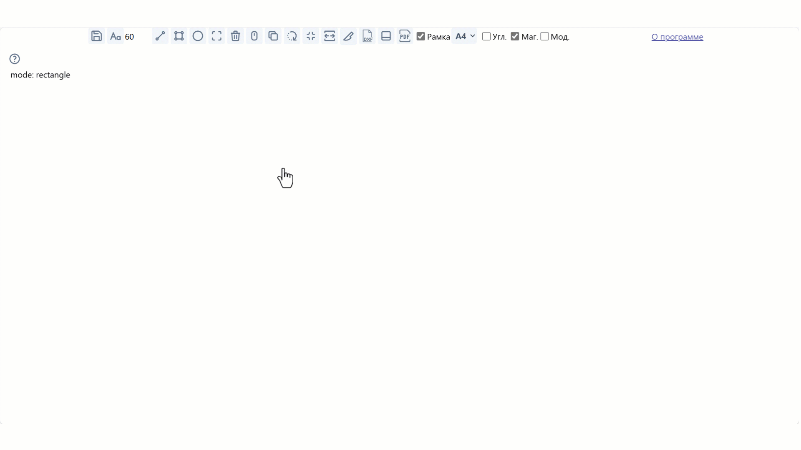

Томат САПР
Бета версия 1.1.1
Российская минималистичная программа черчения. В модулях черчения и текста, которые являются основными, внешние библиотеки, за исключением gl-matrix, не используются.
Основные приемущества
- Простая в использовании. Построена по принципу одно действие - один способ.
- Работает в браузере, на всех платформах.
- Быстрый запуск.
- Лёгкий вывод чертежей в PDF.
- Рамки чертежей по ГОСТ
- В базовом виде бесплатна.
Программа находится в стадии Бета-тестирования и доработки. На данный момент есть следующие ограничения:
- Нет возможности повернуть текст
Инструкция к использованию
Ширина и высота прямоугольника

Начать пользоваться